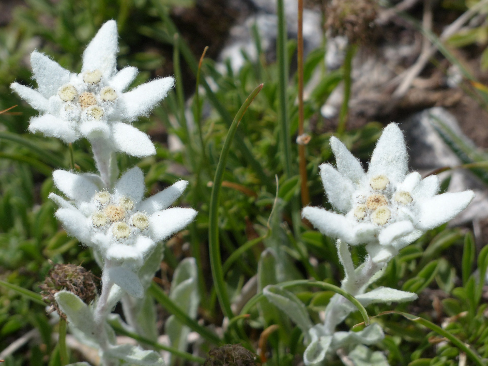
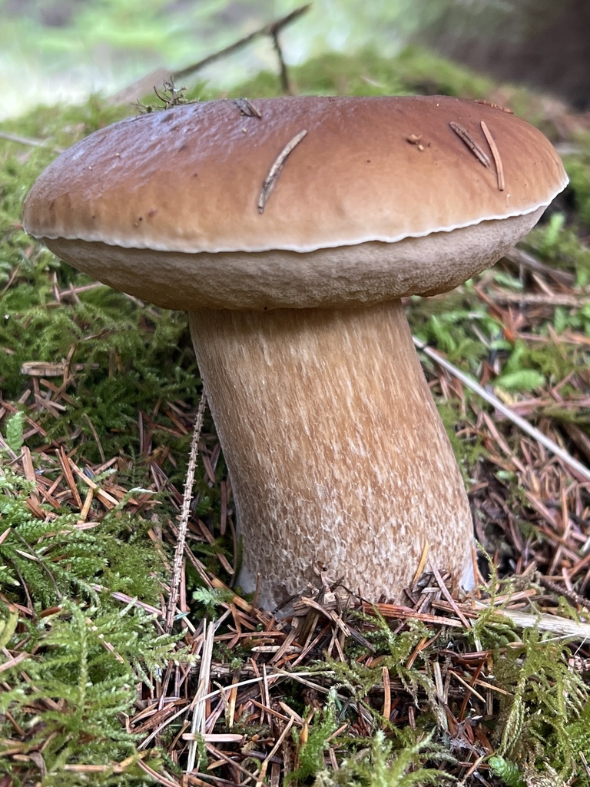

Flora
Alpine Icons and High-Mountain Plants

Edelweiss (Leontopodium nivale, Edelweiß)
A symbol of the Alps, this perennial forms compact rosettes with woolly, silver-white, star-shaped bracts around tiny yellowish flower heads. The tomentose hairs reflect UV and reduce desiccation, an adaptation to intense radiation and wind. Plants are typically 5–15 cm tall, rooted in calcareous scree and rocky ledges, often between 1,800–3,000 m. Blooming: July–September. Conservation: strictly protected in Austria; locally uncommon due to habitat specificity and historic over-collection. Where/when to see: limestone outcrops in the Northern Calcareous Alps (e.g., Dachstein fringes, Gesäuse) in mid- to late summer. Tip: admire, do not pick; macro lenses capture detail without trampling fragile substrates.
Trumpet gentian (Gentiana acaulis, Enzian)
Low, mat-forming plant with glossy evergreen leaves and striking deep blue, flared trumpet flowers 3–5 cm across, with greenish spotting in the throat. Height 5–10 cm, occurring on calcareous or acidic alpine turf, often in snowbed margins. Blooming: May–June at lower alpine elevations (1,500–2,000 m), June–July higher. Uses: gentian roots (various Gentiana spp.) are distilled into traditional schnapps (Enzianschnaps)—note that gathering is regulated. Where/when to see: sunny alpine lawns in Salzburg, Tyrol, and Styria after snowmelt. Tip: morning light enhances petal iridescence.
Alpenrose (Rhododendron ferrugineum, Alpenrose)
An evergreen shrub of acidic subalpine heathlands, 30–120 cm tall, with leathery, rust-scaled undersides to leaves and clusters of magenta-pink bell-shaped flowers. It forms continuous belts above 1,600 m on siliceous substrates. Blooming: June–July, painting hillslopes pink. Ecology: nectar resource for alpine pollinators; forms dense thickets that stabilize slopes. Where/when to see: Zillertal, Ötztal, and the Central Alps on acidic soils; peak bloom early summer. Tip: watch for bumblebees and alpine butterflies feeding among flowers.
Alpine pasqueflower (Pulsatilla alpina, Alpen-Küchenschelle)
A silky, hair-covered perennial with large, white to pale yellow, open flowers (5–7 cm), followed by feathery seed heads. Height 10–25 cm; thrives in alpine meadows and rocky places between 1,800–2,800 m. Blooming: June–July. Adaptation: dense hairs against cold and wind. Where/when to see: grassy slopes of the Hohe Tauern and Karnische Alpen in early summer.
Forest Giants and Treeline Specialists
Arolla (Swiss stone) pine (Pinus cembra, Zirbe/Zirbelkiefer)
Slow-growing, long-lived conifer of the subalpine zone (1,500–2,500 m), reaching 15–25 m height over centuries; some Austrian trees exceed 600 years, with exceptional individuals approaching 1,000+. Needles in bundles of five, soft and bluish-green; cones large (5–8 cm) with wingless seeds (pine nuts) dispersed by nutcrackers. Wood is aromatic, used in traditional alpine carpentry. Ecology: forms treeline woodlands with larch; crucial for biodiversity and slope stabilization. Where/when to see: Hohe Tauern (East Tyrol, Salzburg), Ötztal Alps, High Tauern Zirbenwalds. Tip: listen for Eurasian nutcracker calls—partners in seed dispersal.
European larch (Larix decidua, Lärche)
The only deciduous conifer in central Europe. Tall (up to 40 m), with soft light-green needles in clusters that turn golden in autumn, creating spectacular color belts around 1,400–2,100 m. Cones small (2–4 cm), oval. Bark fissured, cinnamon brown. Ecology: pioneer on avalanche tracks and pastures; resilient to cold and snow load. Where/when to see: widespread in Tyrol, Salzburg, and Styria; peak golden hues late October–early November. Tip: photograph against dark spruce backgrounds for contrast.
Norway spruce (Picea abies, Fichte)
Dominant in Austria’s montane forests (500–1,800 m), with conical crowns, drooping branchlets, and cylindrical cones (10–18 cm). Mature trees reach 50 m. Economic importance: principal timber species; extensive plantations exist alongside natural stands. Ecology: susceptible to bark beetles (Ips typographus) and storm blowdowns; favors cool, moist sites. Where/when to see: widespread; see more natural, mixed stands in Kalkalpen National Park. Tip: in summer, look for resin-scented, mossy spruce forests with varied fungi.
Silver fir (Abies alba, Tanne)
Tall (up to 55 m) with flat, glossy needles bearing two white stripes beneath; upright cones disintegrate on the branch. Shade-tolerant and long-lived, it was historically reduced by logging but is recovering in protected areas. Altitude: 400–1,500 m. Where/when to see: montane mixed forests of Upper Austria (Nationalpark Kalkalpen) and Styria.
European beech (Fagus sylvatica, Rotbuche)
Smooth gray-barked, dense-canopied deciduous tree dominating colline–montane zones (300–1,200 m). Leaves oval with wavy margins; coppery autumn hues. Old-growth beech forests harbor deadwood specialists. Where/when to see: Wienerwald, Kalkalpen, and Gesäuse valleys. Tip: spring ephemerals (wild garlic) carpet beech woods in April–May.
Orchids and Meadow Jewels
Lady’s slipper orchid (Cypripedium calceolus, Frauenschuh)
Austria’s showiest native orchid, with yellow pouch-like labellum and maroon-brown sepals; stems 20–60 cm with several broad leaves. Grows in light pine–beech forests on lime-rich soils, 400–1,300 m. Blooming: May–June. Conservation: regionally rare; strictly protected. Where/when to see: select Tyrol and Carinthia sites; guided walks reduce disturbance.
Martagon lily (Lilium martagon, Türkenbund-Lilie)
Elegant lily with whorled leaves and downward, reflexed pink-purple flowers speckled maroon; 60–150 cm tall. Habitats: montane forests and edges, 600–1,600 m. Blooming: June–July. Where/when to see: shady forest edges in Salzburg and Styria.
Mushrooms and Berries (Identification and Safety)

Porcini/King bolete (Boletus edulis, Steinpilz)
Stocky brown cap (8–25 cm) with pale pores (no gills) and a stout, netted stipe; firm, white flesh that does not blue. Habitats: spruce, beech, and mixed forests (July–October). Culinary prized; collect sustainably and adhere to local limits. Where/when to see: widespread after warm summer rains.

Chanterelle (Cantharellus cibarius, Eierschwammerl)
Bright egg-yellow, vase-shaped fruiting body with blunt, forked ridges (false gills) running down the stem; apricot aroma. 2–6 cm cap. Habitats: conifer and beech forests; June–October. Where/when to see: common in Styria and Salzburg post-rain.
Fly agaric (Amanita muscaria, Fliegenpilz)
Iconic red cap with white warts, white gills, and a ring and volva at base. Psychoactive and potentially toxic; do not consume. Habitats: birch and spruce edges; August–October. Where/when to see: ubiquitous in montane zones.
Death cap (Amanita phalloides, Grüner Knollenblätterpilz)
Pale green to olive cap, white gills, a skirt-like ring, and bulbous base with a white volva; deadly poisonous. Habitats: deciduous woods (beech, oak), often in lowlands; July–October. Tip: never eat any gilled mushroom unless positively identified by an expert.
Mushroom Identification Table (Austria)
| Species (local) | Key features | Edibility | Dangerous lookalikes | How to tell apart |
|---|---|---|---|---|
| Porcini (Steinpilz) | Brown cap, white pores, reticulate stipe, flesh stays white | Edible | Bitter bolete (Tylopilus felleus) | Bitter bolete tastes intensely bitter; darker netting; always test a tiny piece and spit out—never rely solely on taste |
| Chanterelle (Eierschwammerl) | Yellow, forked ridges, apricot smell | Edible | False chanterelle (Hygrophoropsis aurantiaca) | False chanterelle has true gills, softer flesh, deeper orange; smell less fruity |
| Fly agaric (Fliegenpilz) | Red cap with white warts, ring, volva | Toxic | Panther cap (Amanita pantherina) | Panther cap is brown with white warts; both toxic—avoid |
| Death cap (Grüner Knollenblätterpilz) | Greenish cap, white gills, ring, volva | Deadly | Edible green Russulas | Russulas lack a volva and ring; break with chalky snap; when in doubt, do not pick |

Bilberry/Blueberry (Vaccinium myrtillus, Heidelbeere)
Low shrub 15–60 cm, green angular stems, solitary dark blue berries that stain fingers and tongue purple. Acidic conifer woods and heaths, 600–1,800 m. Season: July–September. Where/when to see: widespread in montane spruce and larch forests.
Lingonberry (Vaccinium vitis-idaea, Preiselbeere)
Evergreen, leathery leaves with pale undersides; clusters of bright red, tart berries. Acidic soils 800–2,000 m. Season: August–October. Culinary: used in jams with game dishes. Where/when to see: subalpine heaths with Alpenrose.
Elderberry (Sambucus nigra, Holunder)
Large shrub/tree with creamy umbels (May–June) and black berry clusters (August–September). Edible when cooked; raw berries can cause stomach upset. Lowlands to foothills. Use: syrups (Holundersaft), fritters from blossoms (Hollerküchle). Avoid red elder (S. racemosa) raw berries.
Berries and Lookalikes (Austria)
| Berry (local) | Key features | Edibility | Dangerous lookalikes | Caution |
|---|---|---|---|---|
| Bilberry (Heidelbeere) | Single berries, blue flesh, stains purple | Edible raw/cooked | Herb Paris (Paris quadrifolia) | Do not pick from unfamiliar plants; check leaves (Paris has 4 whorled leaves, one black berry—poisonous) |
| Lingonberry (Preiselbeere) | Red clusters, evergreen leaves | Edible cooked | Bog cranberry vs. bearberry | Confirm leaf shape and habitat; avoid if uncertain |
| Elderberry (Holunder) | Umbels → black drupes | Edible when cooked | Dwarf elder (S. ebulus) | Dwarf elder herbaceous, unpleasant smell; cook thoroughly |
Traveler safety for foraging: follow regional quotas, never pick in protected zones, and consult local mycological clubs; when uncertain, leave it.